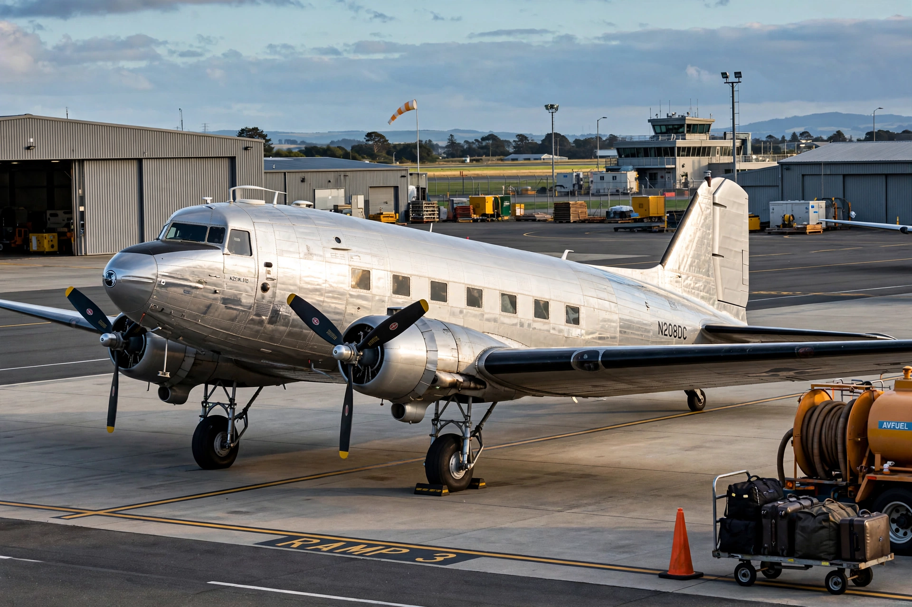

Douglas DC-3
From Wikipedia, the free encyclopedia

A DC-3 in airline markings.The Douglas DC-3 is a propeller-driven airliner manufactured by Douglas Aircraft from 1936, which revolutionised air transport: it was the first airliner that could profitably carry passengers without depending on mail subsidies. Fast (for its day), reliable and economical, over 600 were built for airlines and more than 10,000 of its military version, the C-47 Skytrain (Dakota in British service). Remarkably, hundreds of DC-3s and C-47s remain in service worldwide — a working life approaching 90 years.
Origins
American Airlines\' C. R. Smith asked Douglas for a bigger, sleeper-equipped successor to the DC-2; the result (first flown 17 December 1935, the 32nd anniversary of Kitty Hawk) seated 21 passengers by day or 14 in berths. Eastern and TWA adopted it after American, and the DC-3 quickly carried the great majority of US airline traffic.
War and after
The C-47 dropped paratroops on D-Day, flew the Berlin Airlift and served in Korea and Vietnam; General Eisenhower named it among the weapons that won the war. Post-war, thousands of surplus C-47s flooded civil markets worldwide, and turboprop conversions (Basler BT-67) keep the airframe working in cargo, survey and Antarctic service today.
Design
Two Wright Cyclone or Pratt & Whitney Twin Wasp radials, an unpressurised cabin, tailwheel gear and a 150–180 mph cruise defined the type. Its docility, ruggedness and cheap operation set the template every airliner since has followed: the DC-3 is routinely called the greatest transport aircraft ever built.